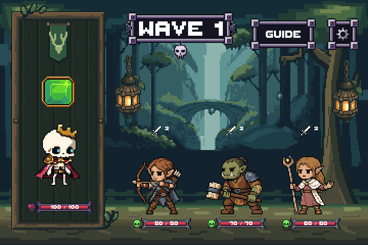
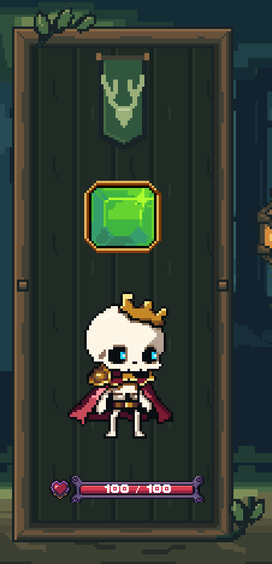
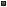
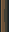

Checkpoint 3 only. Actual Unity art-only captures with static Rattlebones and three Forest enemies. The approved background, portrait contents, shared controls and lower-HUD files are unchanged. No production integration or merge.


Four 15x15 corners, four 32-pixel repeats with 9-pixel thickness, one 7x7 join, and two padded vines. Eight material colors total, binary alpha. PixelLab: zero new generations; prior source retained. LibreSprite: eleven exported/reopened native documents.


Compilation and explicit Unity test passed. Exact 2x rendering, complete sprite bounds, five responsive shell sizes, eight exact corner ports and zero portrait-mask spill verified. Notes · Verification report · Approved background checkpoint